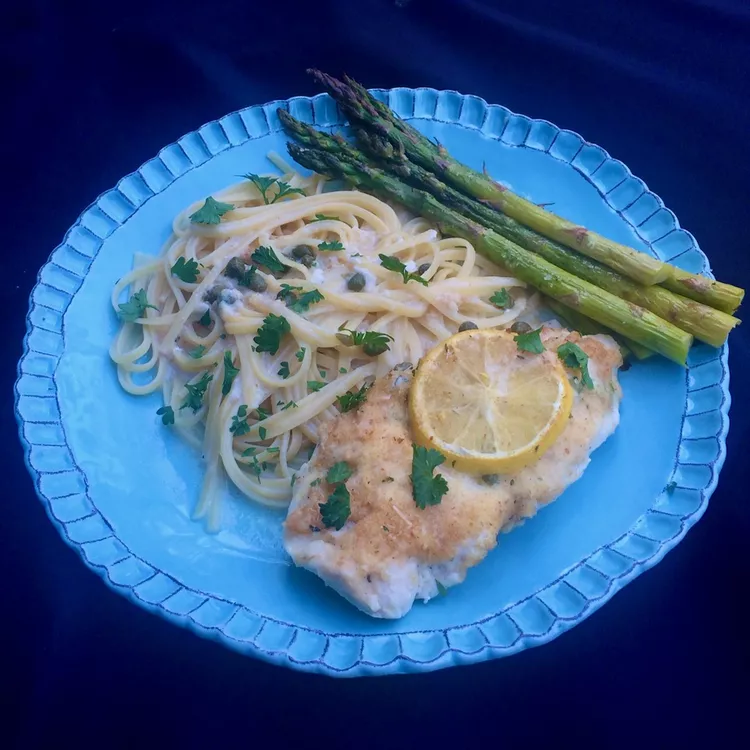

Chicken Piccata Casserole

Ingredients
- cooking spray
- 2 tablespoons unsalted butter
- 2 tablespoons all-purpose flour
- 2 cloves garlic, minced
- ½ cup chicken broth
- ½ cup half-and-half
- ¾ cup grated Parmesan cheese, divided
- ¼ cup lemon juice
- ¼ cup capers, drained
- salt and ground black pepper to taste
- 3 (8 ounce) skinless, boneless chicken breast halves
- 3 tablespoons dry bread crumbs
- 2 tablespoons chopped fresh parsley, or to taste
Directions
- Preheat the oven to 375 degrees F (190 degrees C). Spray a 9x13-inch casserole dish with cooking spray.
- Melt butter in a medium skillet over medium heat. Stir in flour and garlic; stir constantly until garlic is fragrant and flour is mixed well, about 1 minute. Pour in chicken broth and half-and-half. Bring to a boil, stirring frequently, until sauce is bubbly and thick, about 5 minutes.
- Remove the skillet from heat and stir in 1/2 cup Parmesan cheese, lemon juice, capers, salt, and pepper. Set aside.
- Slice each chicken breast lengthwise into 2 cutlets. Place in a single layer in the prepared dish. Season with salt and pepper. Spread the sauce evenly over the chicken and top with lemon slices.
- Combine remaining 1/4 cup Parmesan cheese and bread crumbs. Sprinkle evenly over the casserole.
- Bake in the preheated oven until an instant-read thermometer inserted into the chicken reads 165 degrees F (74 degrees C), 20 to 25 minutes. Garnish with fresh parsley and serve warm.
Go back to homepage